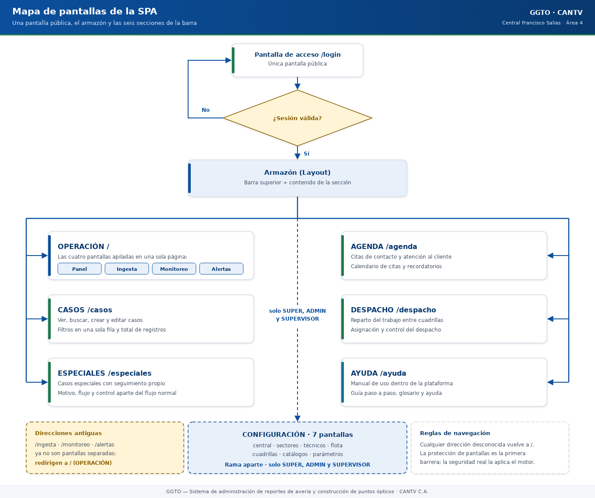
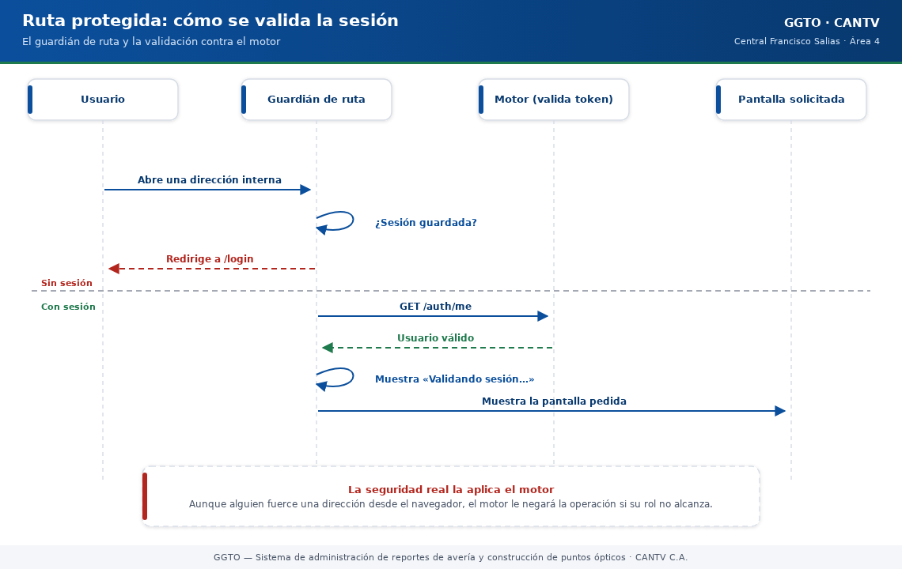

Sistema de administración de reportes de avería y construcción de puntos ópticos
Manual literal · TecnologíaStack del frontend GGTO (SPA React)
Manual para todo público. Explica con palabras sencillas cómo está hecha la parte visual de GGTO: las pantallas que ves en el navegador, cómo se protegen y cómo se construyen. No necesitas saber programar para leerlo.
Manual para todo público. Explica con palabras sencillas cómo está hecha la parte visual de GGTO: las pantallas que ves en el navegador, cómo se protegen y cómo se construyen. No necesitas saber programar para leerlo.
1Empezar en 5 minutos
- La web se abre en el navegador. No hay que instalar nada. Se entra por la dirección del sistema y aparece la pantalla de acceso.
- El sistema pide usuario y clave una sola vez. Después de entrar, la sesión dura 8 horas (una jornada). Si cierras el navegador o recargas, la sesión sigue viva mientras no expire.
- Todos los botones de la barra superior te llevan a una sección. Son nueve y están siempre visibles: PANEL, CASOS, ESPECIALES, AGENDA, DESPACHO, INGESTA, MONITOREO, ALERTAS y AYUDA. CONFIGURACIÓN aparece solo para SUPER, ADMIN y SUPERVISOR.
- La barra se adapta a tu pantalla. En una computadora (pantalla grande) ves solo los nombres de las secciones. En un teléfono o pantalla angosta (hasta 768 puntos de ancho) ves solo los iconos, para que todo quepa.
- Los formularios y las fichas se abren en una ventana flotante grande. Cuando agregas o editas algo, o cuando abres el detalle de un registro, aparece una ventana que ocupa el 90 % de la pantalla, con el título arriba y una X para cerrar. También puedes cerrarla con la tecla Escape o haciendo clic fuera de la ventana. Si el contenido es largo, la ventana tiene su propia barra de desplazamiento.
- Las tablas son más anchas y muestran el total. Cada listado ocupa el 90 % del ancho de la pantalla y, al final, trae una franja con el total de registros que se están mostrando (por ejemplo, «Total: 12 casos»). Si todavía está cargando, dice «Cargando…».
- Si tu rol es TECNICO, el sistema se pone en modo solo lectura. Verás un aviso permanente y el botón «Agregar caso» quedará deshabilitado. Puedes consultar, pero no modificar.
- Puedes compartir enlaces internos. Si copias la dirección de una pantalla (por ejemplo
/monitoreo) y la abres en otra pestaña, funciona igual.

Código del gráfico (Mermaid)
flowchart TD
L["Pantalla de acceso /login<br/>(única pública)"]
L --> G{"¿Sesión válida?"}
G -- "No" --> L
G -- "Sí" --> LAY["Armazón (Layout)<br/>barra superior + contenido"]
LAY --> P["PANEL /"]
LAY --> C["CASOS /casos"]
LAY --> I["INGESTA /ingesta"]
LAY --> D["DESPACHO /despacho"]
LAY --> E["ESPECIALES /especiales"]
LAY --> A["AGENDA /agenda"]
LAY --> M["MONITOREO /monitoreo"]
LAY --> AL["ALERTAS /alertas"]
LAY --> AY["AYUDA /ayuda"]
LAY -. "solo SUPER, ADMIN,<br/>SUPERVISOR" .-> CFG["CONFIGURACIÓN<br/>7 pantallas"]2Stack de la SPA
Una SPA (Single Page Application) es una web que se carga una vez y luego cambia de pantalla sin recargar. La de GGTO está hecha con React 18 y TypeScript.
2.1React 18 y TypeScript
React es la herramienta con la que se construyen las pantallas. TypeScript es la versión "con controles" del lenguaje: obliga a declarar qué tipo de dato es cada cosa, y así se evitan muchos errores antes de publicar.
Las dependencias de ejecución son solo tres:
| Paquete | Versión declarada | Para qué sirve |
|---|---|---|
react |
^18.3.1 |
Construir las pantallas |
react-dom |
^18.3.1 |
Mostrarlas en el navegador |
react-router-dom |
^6.26.2 |
Cambiar de pantalla sin recargar |
No hay ninguna otra dependencia de ejecución. En particular, no se usa una biblioteca externa de gráficos (nada de Recharts ni Chart.js): los gráficos de MONITOREO se dibujan a mano con SVG, que es un formato de dibujo que el navegador entiende de forma nativa.
Las herramientas de desarrollo (no van al usuario final) son: @types/react, @types/react-dom,
@vitejs/plugin-react, typescript y vite.
TypeScript está configurado en modo estricto. El informe de la Fase 4 registra que la revisión de tipos no encontró hallazgos. El título de la pestaña del navegador es GGTO — CANTV y el idioma de la página es español.
2.2Vite
Vite 5 es la herramienta que arma y compila la web. Tiene dos modos:
- Modo desarrollo: levanta la web en el puerto 5173 y reenvía automáticamente todo lo que
empieza por
/apial motor, que escucha en el puerto 8000. Gracias a este reenvío, la web nunca necesita saber dónde está el motor. - Modo construcción: genera la versión final y la deja en la carpeta
dist, que es exactamente la carpeta que el motor publica.
Los comandos disponibles son:
| Comando | Qué hace |
|---|---|
npm run dev |
Enciende la web en modo desarrollo (con reenvío a /api) |
npm run build |
Revisa los tipos y construye la versión final |
npm run preview |
Muestra una vista previa de la versión construida |
Un detalle importante: build primero revisa los tipos. Si hay un error, no se genera la versión
final. Es una barrera de calidad, no un defecto.
2.3react-router-dom
El enrutado es lo que decide qué pantalla mostrar según la dirección. GGTO usa BrowserRouter,
lo que significa que las direcciones son direcciones reales (/casos, /monitoreo). Por eso el motor
tiene que devolver la página principal cuando no encuentra el archivo: así React se encarga de mostrar
lo correcto.
El orden de armado del cliente es importante: primero el enrutador, después el proveedor de autenticación y por último la aplicación. Si el orden se invirtiera, la protección de rutas no funcionaría.
3Estructura del proyecto web
La web vive en la carpeta app/web. Estas son sus partes. La web tiene 17 pantallas y su barra
superior reúne 9 secciones: PANEL, CASOS, ESPECIALES, AGENDA, DESPACHO, INGESTA, MONITOREO,
ALERTAS y AYUDA. Las siete pantallas de configuración se agrupan en el menú CONFIGURACIÓN.
3.1main.tsx y App.tsx
main.tsxes el arranque: 16 líneas que encienden React, conectan el enrutador, conectan el sistema de sesión y cargan los estilos.App.tsxes el mapa de rutas: 51 líneas que dicen qué pantalla corresponde a cada dirección. No tiene reglas de negocio.
La estructura de rutas es anidada: hay un "guardián" que revisa la sesión y, si todo está bien, muestra el armazón con la barra superior y la pantalla que pediste.
/login → pantalla de acceso (pública)
(todo lo demás) → primero revisa la sesión
/ → PANEL
/ingesta /casos /despacho /especiales /agenda
/monitoreo /alertas /ayuda
/central /sectores /tecnicos /flota /cuadrillas
/catalogos /parametros
(dirección desconocida) → vuelve al PANEL
3.2pages/
La carpeta pages/ tiene 17 pantallas, una por sección. Estas son, con su tamaño real en líneas
(útil para saber cuáles son las más complejas):
| Pantalla | Archivo | Líneas |
|---|---|---|
| Panel | Panel.tsx |
106 |
| Login | Login.tsx |
202 |
| Ingesta | Ingesta.tsx |
447 |
| Casos | Casos.tsx |
974 |
| Despacho | Despacho.tsx |
1234 |
| Especiales | Especiales.tsx |
509 |
| Agenda | Agenda.tsx |
805 |
| Monitoreo | Monitoreo.tsx |
777 |
| Alertas | Alertas.tsx |
661 |
| Centrales | Centrales.tsx |
336 |
| Sectores | Sectores.tsx |
548 |
| Tecnicos | Tecnicos.tsx |
397 |
| Flota | Flota.tsx |
402 |
| Cuadrillas | Cuadrillas.tsx |
583 |
| Catalogos | Catalogos.tsx |
464 |
| Parametros | Parametros.tsx |
185 |
| Ayuda | Ayuda.tsx |
550 |
Todas siguen el mismo patrón: al abrirse piden sus datos al motor, muestran un aviso mientras cargan, y si algo falla muestran un mensaje de error. El PANEL es el mejor ejemplo: muestra seis tarjetas con los conteos de tablas, centrales, roles, cuadrillas, causas y parámetros, y tiene un buscador rápido que salta a CASOS con el texto ya escrito.
3.3components/
La carpeta components/ guarda las piezas que se repiten en varias pantallas:
| Componente | Qué hace |
|---|---|
Layout |
El armazón: barra superior, menús y espacio de contenido |
RutaProtegida |
El guardián de la sesión |
BuscadorGlobal |
Buscador de un solo campo, en la barra superior |
ModalCaso |
La ventana del botón «Agregar caso» |
Modal |
La ventana flotante grande donde se abren los formularios y las fichas |
PieTabla |
La franja al pie de cada tabla con el total de registros |
graficos |
Los cuatro tipos de gráfico dibujados en SVG |
Iconos |
El conjunto de iconos del sistema |
EstadoChips |
Las etiquetas de colores que indican el estado de un caso |
Mensaje |
Aviso de error o de información |
useCerrarDesplegable |
Cierra los menús al hacer clic fuera de ellos |
3.4api/
La carpeta api/ tiene dos archivos grandes:
| Archivo | Líneas | Contenido |
|---|---|---|
client.ts |
886 | Todas las llamadas al motor y el manejo de errores |
types.ts |
988 | Los "moldes" de datos, escritos a mano |
Los tipos de types.ts son un espejo de lo que declara el motor. No se generan solos: cuando
alguien agrega un campo en el motor, debe agregarlo también aquí. Es un punto de atención conocido.
3.5auth/
La carpeta auth/ contiene el sistema de sesión. Su archivo AuthContext.tsx (87 líneas) guarda:
- Quién es el usuario.
- Si está cargando.
- Si está autenticado.
- Si está en modo solo lectura (
TECNICO). - Las funciones para entrar y salir.
Al abrir el sistema, si hay una sesión guardada, se valida contra el motor con GET /auth/me. Si la
validación falla, se limpia la sesión y se vuelve al acceso.
4Enrutado y proteccion
4.1Rutas publicas y protegidas (app/web/src/App.tsx:24-49)
Hay una sola dirección pública: /login. Todas las demás exigen sesión válida.
| Tipo | Dirección | Pantalla |
|---|---|---|
| Pública | /login |
Acceso |
| Protegida | / |
PANEL |
| Protegida | /ingesta |
INGESTA |
| Protegida | /casos |
CASOS |
| Protegida | /despacho |
DESPACHO |
| Protegida | /especiales |
ESPECIALES |
| Protegida | /agenda |
AGENDA |
| Protegida | /monitoreo |
MONITOREO |
| Protegida | /alertas |
ALERTAS |
| Protegida | /ayuda |
AYUDA |
| Protegida | /central |
CONFIGURACIÓN · Central |
| Protegida | /sectores |
CONFIGURACIÓN · Sectores |
| Protegida | /tecnicos |
CONFIGURACIÓN · Técnicos |
| Protegida | /flota |
CONFIGURACIÓN · Flota |
| Protegida | /cuadrillas |
CONFIGURACIÓN · Cuadrillas |
| Protegida | /catalogos |
CONFIGURACIÓN · Catálogos |
| Protegida | /parametros |
CONFIGURACIÓN · Parámetros |
| Redirección | cualquier otra | Vuelve al PANEL |
Aviso importante: no existen pantallas separadas de SEGUIMIENTO, EMPRESAS, REFERIDOS ni GESTIÓN. Esas vistas se atienden desde ESPECIALES y desde CASOS. No busques un menú que no existe.

Código del gráfico (Mermaid)
sequenceDiagram
participant U as Usuario
participant R as Guardián de ruta
participant M as Motor (valida token)
participant P as Pantalla solicitada
U->>R: Abre una dirección interna
R->>R: ¿Sesión guardada?
alt Sin sesión
R-->>U: Redirige a /login
else Con sesión
R->>M: GET /auth/me
M-->>R: Usuario válido
R->>R: Muestra "Validando sesión…"
R-->>P: Muestra la pantalla pedida
end
Note over R,M: La seguridad real la aplica el motor.<br/>Ocultar una ruta aquí no basta.4.2RutaProtegida
Es el guardián. Tiene tres salidas posibles:
- Mientras valida, muestra un aviso: «Validando sesión…». Esta espera evita que la pantalla "parpadee" saltando al acceso y volviendo.
- Si no hay sesión, te lleva a
/login. - Si la sesión es válida, muestra la pantalla que pediste.
Es muy importante entender esto: la protección de pantallas es solo la primera barrera. La seguridad de verdad la aplica el motor. Aunque alguien intentara forzar una dirección desde el navegador, el motor le negaría la operación si su rol no alcanza. Por eso, ocultar un botón no es una medida de seguridad por sí sola.
4.3Layout y barra superior (app/web/src/components/Layout.tsx)
El armazón de la aplicación (230 líneas) tiene tres partes:
- Barra superior (
topbar) con la marca GGTO — CANTV, el buscador global, el botón «Agregar caso», la navegación y el menú de usuario. - Contenido (
main) con el aviso de solo lectura (cuando corresponde) y la pantalla actual. - Ventana de alta de caso, que aparece solo cuando se abre.
Las secciones principales son nueve y están en este orden: PANEL, CASOS, ESPECIALES, AGENDA, DESPACHO, INGESTA, MONITOREO, ALERTAS y AYUDA.
La barra cambia según el dispositivo. En una computadora se ven solo los nombres de las secciones. En una pantalla angosta (hasta 768 puntos de ancho, como un teléfono) se ven solo los iconos: el texto se oculta y vuelve a aparecer el dibujo de cada sección. Así los nueve accesos caben sin apretarse.
El submenú CONFIGURACIÓN tiene siete entradas y se muestra solo si tu rol es SUPER, ADMIN o SUPERVISOR.
El menú de usuario muestra tu inicial en un círculo, tu nombre (o tu P00) y tu rol. Si eres TECNICO, aparece además la insignia «solo lectura». Al abrirlo verás tu P00, tu correo, tu rol, tu central y el botón para cerrar sesión.
| Elemento de la barra | Para qué sirve |
|---|---|
| Marca GGTO — CANTV | Vuelve al PANEL |
| Buscador global | Busca casos desde cualquier pantalla |
| Botón «Agregar caso» | Abre la ventana de alta (deshabilitado en solo lectura) |
| Navegación de secciones | Salta entre las nueve secciones principales |
| Submenú CONFIGURACIÓN | Acceso a las siete pantallas de configuración |
| Menú de usuario | Datos de tu cuenta y cierre de sesión |
4.4Modales y tablas (requisito de UI D-64)
Una mejora reciente (registrada como D-64) cambió la forma de mostrar los formularios, las fichas y las tablas. Se hizo para que trabajar sea más cómodo, sobre todo en pantallas pequeñas.
Ventana flotante grande. Cuando agregas o editas algo, o cuando abres el detalle de un registro, no vas a una pantalla aparte: se abre una ventana flotante encima de lo que estabas viendo. Esa ventana ocupa el 90 % de la pantalla (el 90 % del ancho y el 90 % del alto). Arriba, a la izquierda, está el título de lo que estás haciendo; arriba, a la derecha, hay una X para cerrar. Si el contenido es largo, la ventana tiene su propia barra de desplazamiento, de modo que el fondo no se mueve.
Puedes cerrar la ventana de tres maneras:
- Pulsando la X de la esquina.
- Pulsando la tecla Escape.
- Haciendo clic fuera de la ventana, en la zona oscurecida.
Los formularios que solo sirven para buscar o filtrar no se abren así: siguen dentro de la misma pantalla, porque no interrumpen lo que estás haciendo.
Tablas más anchas y con total. Cada tabla de listado ocupa ahora el 90 % del ancho de la pantalla (hasta un máximo del 100 %, para que nunca se salga de la ventana). Además, al final de cada tabla hay una franja con el total de registros que se están mostrando, por ejemplo «Total: 12 casos» o «Total: 3 sectores». Si el listado todavía está cargando, esa franja dice «Cargando…». El conteo respeta los filtros que tengas puestos: si filtras, el total baja.
5Cliente HTTP y tipos
5.1app/web/src/api/client.ts
Este archivo (886 líneas) es la única puerta de salida de la web hacia el motor. Todas las pantallas pasan por aquí. Sus tres decisiones de diseño son:
- Mismo origen: la base de las llamadas es
/api/v1, una ruta relativa. - Pase de sesión (token): se guarda en el navegador y se envía en cada llamada.
- Errores claros: cualquier falla se convierte en un mensaje entendible, con su código.
Las funciones se agrupan por sección:
| Grupo | Ejemplos de funciones |
|---|---|
| Acceso | entrar, consultar mi usuario, desbloquear |
| Central | listar, crear, consultar, actualizar, desactivar |
| Sectores | listar, crear, agregar dirección, eliminar dirección |
| Técnicos y flota | listar y crear técnicos, listar y crear vehículos, retirar vehículo |
| Cuadrillas | listar, crear, agregar integrante, retirar integrante |
| Catálogos y parámetros | listar causas y métodos, listar y actualizar parámetros |
| INGESTA | simular carga, cargar archivo, listar lotes, ver detalle de lote |
| CASOS | listar, buscar, consultar, crear, actualizar, ver historial |
| DESPACHO | simular propuesta, generar, listar, imprimir, enviar |
| ESPECIALES y AGENDA | listar solicitantes, casos especiales, citas y seguimiento |
Un detalle técnico con efecto práctico: la INGESTA sube el archivo CSV con un formato especial de carga de archivos. Por eso ese envío es distinto de los demás y se maneja aparte.
5.2app/web/src/api/types.ts
Este archivo (988 líneas) reúne las interfaces, es decir, los moldes de datos que la web espera recibir. Los grupos verificados son:
| Grupo | Moldes |
|---|---|
| Acceso | Usuario, respuesta del token, posición de palabra, respuesta de desbloqueo |
| Central | Central y sus variantes de creación y edición |
| Sectores | tipos de coincidencia, dirección de sector, sector |
Dos convenciones útiles:
- Los moldes de creación se derivan de los de lectura. Por ejemplo, "Central para crear" es igual a "Central" sin el identificador.
- Los campos que pueden venir vacíos se escriben con
| nully los opcionales con?, respetando la realidad de la base de datos.
Los valores cerrados (los que solo pueden ser uno de una lista) se escriben como listas de opciones. Por ejemplo, el tipo de coincidencia de una dirección solo puede ser CONTIENE, EXACTO o REGEX, que son justamente los que usa la sectorización.
6Graficos SVG propios
6.1app/web/src/components/graficos.tsx (barras, curva, torta)
Los gráficos de la pantalla MONITOREO se dibujan a mano con SVG, sin librerías externas. Son cuatro:
| Gráfico | Qué muestra |
|---|---|
| Barras | Comparar valores entre categorías |
| Barras agrupadas | Comparar varias series por categoría |
| Líneas (curva) | Ver la evolución en el tiempo |
| Torta | Ver proporciones de un total |
Todos son de solo lectura: reciben datos ya calculados por el motor y los dibujan. El ancho de dibujo es de 640 unidades, pero el gráfico se estira al ancho disponible de la pantalla.
La paleta de colores de las series es fija (azul, verde, mostaza, rojo, violeta y turquesa), lo que mantiene la coherencia visual entre pantallas.
La revisión formal de accesibilidad de estos gráficos (lectores de pantalla, contraste) está pendiente de confirmar. Hoy hay bases de accesibilidad en otras partes de la web, pero el informe AA de los gráficos todavía no está emitido.
7Constructor y salida (npm run build -> app/web/dist, servida por FastAPI)
El proceso de construcción tiene cinco etapas:
- Revisión de tipos. Primero se ejecuta la revisión estricta. Si hay un error, se detiene todo.
- Empaquetado. Vite compila y optimiza la aplicación.
- Salida. El resultado queda en
app/web/dist, con unindex.htmly una carpeta de recursos. Los nombres de los archivos incluyen un código derivado del contenido, por ejemploindex-B48LMoIz.csseindex-BGs0NhQL.js. - Publicación. El motor monta esa carpeta como la página principal de la web.
- Contenedor. La imagen de la nube se construye en dos etapas: una con Node (construye la web) y otra con Python (la sirve). El contenido exacto del archivo de construcción del contenedor está pendiente de confirmar y no forma parte de este manual.
Para trabajar en desarrollo: npm run dev en app/web (puerto 5173) con el motor en el puerto 8000.
| Comando | Efecto |
|---|---|
npm run dev |
Enciende la web de desarrollo con reenvío a /api |
npm run build |
Revisa tipos y genera app/web/dist |
npm run preview |
Muestra la versión construida antes de publicarla |
8Estado actual y pendientes (accesibilidad RNF-23, pruebas de UI: pendiente de confirmar)
Estado verificado y cosas por cerrar:
- Pruebas de navegador: existen pruebas E2E con Playwright que corren contra un esquema aislado
(
ggto_e2e). La Fase 4 cerró con 46 pruebas E2E en verde junto con 169 pruebas de Python (215 en total). Después llegó el ciclo de UI D-64 y la cifra subió a 56 pruebas E2E (5 nuevas que comprueban la barra por dispositivo y el 90 % real de la ventana y de la tabla), para un total de 225 pruebas en verde. El detalle exacto de qué pantalla cubre cada prueba está pendiente de confirmar contra el informe de la Fase 4. - Accesibilidad (RNF-23): el requisito pide cumplir WCAG 2.1 AA, verificado con herramientas automáticas (axe o Lighthouse) y revisión manual. Hoy hay buenas bases en el código (avisos para lectores de pantalla, etiquetas en enlaces y menús), pero la auditoría formal y el registro de conformidad están pendientes de confirmar.
- Contraste y foco: el contraste real de cada combinación de colores frente al mínimo de 4.5:1 está pendiente de confirmar con una medición.
- Sincronización de tipos: los moldes de la web se mantienen a mano. No hay generación automática ni una verificación en la integración continua; el riesgo de desincronización está pendiente de confirmar en cuanto a su mitigación.
- Integración continua: el flujo verificado ejecuta las revisiones de Python y las pruebas de Python. La ejecución de la revisión de tipos de la web, de la construcción y de las pruebas de navegador dentro de ese flujo está pendiente de confirmar.
- Aplicación móvil: la app Flutter para Android no está desarrollada (Ciclo 8 diferido). Este manual no la documenta como existente. Cuando en este sistema se habla de "móvil", se refiere a que la web se adapta a pantallas pequeñas, no a una aplicación nativa.
- WhatsApp: no existe integración. Quedó diferida a la versión 3.